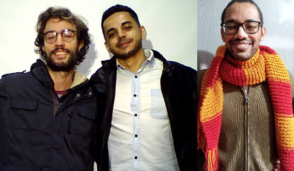

Danilo Misura de Oliveira - 11006514
Gabriel da Fonseca Nunes - 11201921456
Thiago ... - 112017
O processamento de vídeo desempenha um papel fundamental em diversas áreas,
como visão computacional, realidade virtual, jogos, vigilância por vídeo, entre outros.
O foco deste laboratório é introduzir os fundamentos do processamento de vídeo utilizando
a biblioteca OpenCV e realizar atividades iniciais de captura de imagem e vídeo.
O processamento de vídeo envolve a aplicação de técnicas para manipular, analisar e extrair informações de sequências de imagens em movimento. Para realizar essas tarefas, utilizaremos a biblioteca OpenCV, uma poderosa ferramenta para processamento de imagens e vídeos.
As principais operações básicas que iremos explorar incluem a leitura de imagens e vídeos a partir de arquivos, visualização de imagens em janelas, salvamento de imagens em arquivos, captura de imagens da câmera e gravação de vídeos da câmera. Além disso, iremos aprender sobre diferentes aspectos, como a velocidade de exibição das imagens em vídeo, a alteração da imagem exibida em tempo real, e a realização de operações de processamento de imagem nos programas estudados
Antes de iniciar o trabalho com processamento, é imprescindível obter um melhor entendimento de alguns conceitos fundamentais relacionados ao processamento de vídeo.
Imagem e Vídeo: Imagens são representações visuais de objetos, cenas ou fenômenos capturados através de dispositivos ópticos, como câmeras fotográficas ou sensores de imagem. Elas são compostas por uma matriz de elementos chamados de pixels, que são os pontos básicos de informação que compõem a imagem. Cada pixel contém informações sobre a cor e a intensidade luminosa em um determinado ponto da imagem. Essas informações são armazenadas e processadas digitalmente, permitindo a exibição, manipulação e análise das imagens em dispositivos eletrônicos, como computadores, smartphones, tablets e telas de visualização. As imagens podem ser classificadas em diferentes tipos, como imagens em preto e branco (tons de cinza), imagens em escala de cores (RGB - vermelho, verde e azul) ou imagens em outros espaços de cores, como YUV ou HSV. Além disso, as imagens podem ser estáticas, representando uma única cena, ou sequenciais, formando um vídeo. No contexto do processamento de vídeo, as imagens são essenciais para realizar diversas tarefas, como detecção de objetos, reconhecimento de padrões, análise de movimento, segmentação de objetos, entre outras aplicações. O processamento das imagens permite extrair informações relevantes e realizar transformações que podem melhorar sua qualidade, ressaltar características ou facilitar a interpretação dos dados visuais.
Pixel e Matriz de Pixels: Pixel e Matriz de Pixels: Um pixel é o menor elemento em uma imagem ou quadro de vídeo e representa um valor numérico que define sua cor ou intensidade. Uma matriz de pixels é uma grade bidimensional de pixels que compõem uma imagem ou quadro de vídeo.
Espaço de Cores: Existem vários espaços de cores utilizados para representar e manipular as cores em imagens e vídeos, como RGB (Red, Green, Blue), YUV (Luminância, Crominância) e HSV (Matiz, Saturação, Valor). Compreender como esses espaços de cores funcionam é importante para realizar operações de processamento de vídeo.
Detecção de Movimento: A detecção de movimento é uma técnica importante para analisar mudanças na posição dos objetos em uma sequência de quadros de vídeo. Ela pode ser utilizada para rastreamento de objetos, detecção de atividades suspeitas, análise de movimento humano, entre outras aplicações.
Segmentação de Imagem: A segmentação de imagem envolve a subdivisão de uma imagem em regiões ou objetos distintos. Pode ser utilizada para extrair áreas de interesse, realizar contagem de objetos, detecção de bordas, entre outras tarefas.
Este relatório foi divido em três partes. Nesta primeira parte do laboratório, iremos preparar o ambiente e executar as atividades iniciais por meio do arquivo de configuração Ambiente Miniconda e OpenCV 4.7 para o Ubuntu 22.04 . Em seguida, na parte 2, vamos explorar o processamento básico de imagens e vídeos, estudando diferentes operações por meio de programas fornecidos. Na parte 3, iremos obter fotos e vídeos utilizando uma webcam, salvando os arquivos para uso futuro.
A seguir, apresentamos os materiais utilizados em conjunto com suas respectivas descrições, a fim de criar um ambiente de trabalho adequado para a realização da atividade prática no laboratório de Processamento de Vídeo. Esses materiais possibilitam a aquisição, manipulação e processamento eficiente e preciso de imagens e vídeos:
Foi acessado o moodle e seguido as instruções fornecidas no arquivo de configuração do ubuntu 22.04 para preparar o ambiente de desenvolvimento no Ubuntu com o OpenCV. Após isso foi feito download dos arquivos do Laboratório 1 - Parte 2 para o diretorio de desenvolvimento no computador.
Foi executado cada um dos programas fornecidos nas atividades B, C e D da parte 2 do laboratório, conforme as instruções específicas. Observe os resultados obtidos e faça as modificações solicitadas em cada programa, documentando as alterações realizadas e explicando detalhadamente as soluções encontradas.
Foram utilizados os programas corrigidos da parte 2 para obter as fotos e vídeos solicitados na parte 3 do laboratório. Foram gravados os arquivos no computador, garantindo que sejam Foi utilizado um editor de imagem para compor as fotos individuais em uma foto geral para criar uma foto-montagem com os avatares da equipe
Abaixo seguie o código de cada script executado juntamento com seu diagrama de blocos e descrição de funcionamento:
Durante a execução das atividades propostas, foram obtidos os seguintes resultados:
Parte 2, Atividade B: Observou-se que ao executar o programa "L1_2_video.py", a sequência de imagens do vídeo foi exibida em uma janela do sistema Linux. Para alterar a velocidade de exibição das imagens, foram feitas modificações no programa para acelerar e desacelerar a reprodução. A explicação para a alteração de velocidade está relacionada ao controle do tempo entre a exibição de cada quadro.
Parte 2, Atividade C: Ao executar o programa "L1_3_webcam.py", foi possível capturar imagens da câmera instalada no computador e exibi-las em sequência em uma janela do sistema Linux. A modificação realizada no programa permitiu salvar uma imagem da câmera em um arquivo "foto1.png" ao pressionar a tecla 'x' no teclado. A solução foi implementada utilizando eventos de teclado e a função apropriada do OpenCV para salvar a imagem.
Parte 2, Atividade D: Utilizando o programa "L1_4_webcap.py", foram lidas as imagens da câmera, exibidas em uma nova janela do sistema Linux, e ao pressionar a tecla "q", toda a sequência de imagens foi salva em um arquivo de vídeo "saida.avi" no formato AVI. A modificação realizada no programa buscou garantir que as imagens gravadas fossem "normais" e que a velocidade de exibição fosse adequada. A solução envolveu ajustes nas configurações de gravação e exibição de vídeo.

Neste laboratório, iniciamos os trabalhos com o OpenCV no ambiente Ubuntu, explorando o processamento de vídeo por meio de diferentes operações. Através da leitura de imagens e vídeos, captura de imagens da câmera e gravação de vídeos, pudemos aprender sobre o uso básico da biblioteca OpenCV e suas funcionalidades. Durante as atividades, foram realizadas alterações nos programas fornecidos para melhorar a velocidade de exibição das imagens, permitir o salvamento de imagens da câmera em arquivos, ajustar as configurações de gravação de vídeos e garantir que as imagens gravadas estivessem adequadas. Através dessas atividades, foi possível obter conhecimentos fundamentais para o processamento de vídeo e adquirir experiência prática na utilização das ferramentas do OpenCV. Essas habilidades serão essenciais para o desenvolvimento de projetos futuros relacionados ao processamento de vídeo.